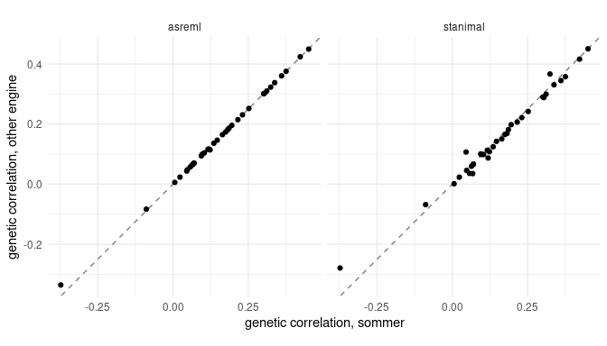
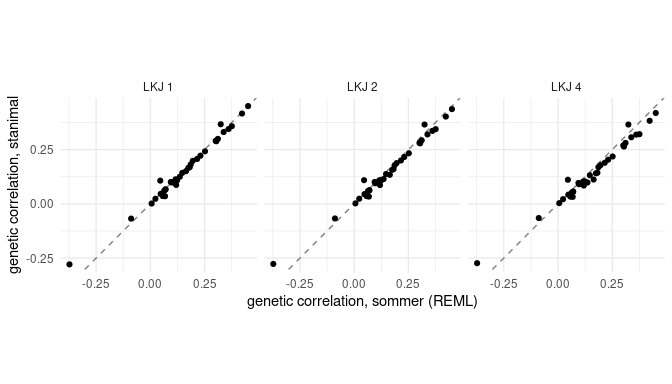

This vignette estimates the additive genetic covariance matrix G of nine growth traits in mice with each of indri’s three engines, shows how to read a fit, and gives a rule for choosing the prior of the Bayesian engine. It was precomputed: the fits take from seconds (REML) to many minutes (stanimal).
How indri estimates G
A multivariate animal model on many traits is expensive: the number
of parameters grows with the square of the number of traits, and fitting
all of them at once is slow and often unstable. indri, following LiMMBo
(Meyer et al. 2018), fits many small animal models instead, each on a
subset of the traits, so that every pair of traits is estimated in
several subsets. It then averages the subset estimates of each
covariance and projects the result onto the positive semi-definite
matrices, so that the assembled G is a covariance matrix.
The small fit is done by a pluggable engine:
"sommer" and "asreml" (REML) or
"stanimal" (a Bayesian sampler).
The data
An F3 intercross of two inbred mouse strains selected for large
(LG/J) and small (SM/J) body size ships with indri. The parental strains
are fully inbred and the F1 all heterozygous, so the F2 parents of the
F3 are unrelated founders, and the F3 mice are related only through
them: full sibs (1/2) and, for nine sires with two mates, half sibs
(1/4). lgsm_A is that relationship matrix. The traits are
the nine weekly weight gains (growth12, the gain from week
1 to week 2, to growth910), and the fixed effects those of
the original analyses: sex, rearing cohort and litter size at birth and
at weaning.
# The data every vignette uses: the nine weekly weight gains of the LG/SM F3
# mice, with the fixed effects of the original analyses.
library(indri)
traits <- lgsm_traits$growth
d <- lgsm_f3[lgsm_f3$ID %in% rownames(lgsm_genotypes$A), ]
d <- d[stats::complete.cases(d[c(traits, "LSB", "LSW")]), ]
Y <- as.matrix(d[traits])
rownames(Y) <- d$ID
X <- stats::model.matrix(~ SEX + factor(COHORT) + LSB + LSW, d)
rownames(X) <- d$ID
A <- lgsm_A[rownames(Y), rownames(Y)]
dosage <- lgsm_genotypes$A[rownames(Y), ] + 1
info <- transform(lgsm_markers, pos = cM)
cores <- as.integer(Sys.getenv("INDRI_VIGNETTE_CORES", "2"))
dir.create("cache", showWarnings = FALSE)
dim(Y)
#> [1] 1548 9
round(colMeans(Y), 2)
#> growth12 growth23 growth34 growth45 growth56 growth67 growth78 growth89
#> 3.06 3.83 6.14 4.45 1.81 1.41 1.34 1.19
#> growth910
#> 1.02One caveat before any fit: the full sibs also share a mother and a
litter, and indri’s models have one random effect, the additive one.
Variance shared by littermates (maternal effects, a common nest)
therefore ends up partly in G. Some pups were
cross-fostered, which separates the litter environment from the mother,
but the model here does not use it. Read the G below as an
additive-plus-litter covariance; the original analyses included a dam
effect.
Three engines on the same data
All three engines take the same call; only engine
changes. The REML engines run in seconds:
time_sommer <- system.time(
fit_sommer <- fit_G(Y, X = X, A = A, engine = "sommer", cores = cores,
seed = 1L, progress = FALSE))
fit_sommer
#> <indri fit>
#> traits: 9
#> individuals: 1548
#> engine: sommer
#> subsets: 16 of up to 4 traits
#> assembly: ls (none weights)
#> pair coverage: 1 to 4
#> min eigenvalue: 0.1431
#>
#> G (first entries):
#> growth12 growth23 growth34 growth45
#> growth12 0.272 0.027 0.002 0.086
#> growth23 0.027 0.803 0.234 -0.334
#> growth34 0.002 0.234 0.648 0.109
#> growth45 0.086 -0.334 0.109 0.997
has_asreml <- nzchar(system.file(package = "asreml"))
if (has_asreml) {
time_asreml <- system.time(
fit_asreml <- fit_G(Y, X = X, A = A, engine = "asreml", cores = 2L,
seed = 1L, progress = FALSE))
}asreml needs a licence seat per worker; a standard licence allows two
processes on one machine, hence cores = 2.
The stanimal engine samples each block’s posterior with CmdStan. It
is far slower, and gives posterior draws instead of a normal
approximation. Each block runs four chains here, so a budget of
cores processes runs cores / 4 blocks at a
time:
stan_args <- list(chains = 4L, iter = 2000L, refresh = 0,
show_messages = FALSE)
time_stanimal <- system.time(
fit_stanimal <- fit_G(Y, X = X, A = A, engine = "stanimal",
engine_args = stan_args, cores = cores, seed = 1L,
progress = FALSE))
#> Warning: Several blocks failed to converge: 6 of 33 have rank-normalised
#> split-Rhat >= 1.05 on G (max 1.15). The likelihood may not identify the genetic
#> correlations strongly enough with these data. Consider increasing the LKJ prior
#> parameter, e.g. `engine_args = list(lkj_prior = 2)` (this fit used 1), which
#> regularises the block correlations; longer chains do not help when block
#> posteriors are poorly identified. See `fit$diagnostics$unconverged`.
fits <- list(sommer = fit_sommer, stanimal = fit_stanimal)
if (has_asreml) fits <- c(fits[1], list(asreml = fit_asreml), fits[2])
times <- c(sommer = time_sommer[["elapsed"]],
asreml = if (has_asreml) time_asreml[["elapsed"]],
stanimal = time_stanimal[["elapsed"]])
upper <- function(m) m[upper.tri(m)]
agree <- vapply(fits, function(f) cor(upper(f$corrG), upper(fit_sommer$corrG)),
numeric(1))
data.frame(
engine = names(fits),
seconds = round(times[names(fits)]),
blocks = vapply(fits, function(f) nrow(f$subsets), integer(1)),
mean_abs_corrG = vapply(fits, function(f) mean(abs(upper(f$corrG))), numeric(1)),
corr_with_sommer = vapply(fits, function(f)
cor(upper(f$corrG), upper(fit_sommer$corrG)), numeric(1)),
row.names = NULL)
#> engine seconds blocks mean_abs_corrG corr_with_sommer
#> 1 sommer 17 16 0.1844255 1.0000000
#> 2 asreml 27 16 0.1828312 0.9994066
#> 3 stanimal 1076 33 0.1762084 0.9900802
library(ggplot2)
pairs <- do.call(rbind, lapply(names(fits)[-1], function(e)
data.frame(engine = e, sommer = upper(fit_sommer$corrG),
other = upper(fits[[e]]$corrG))))
ggplot(pairs, aes(sommer, other)) +
geom_abline(linetype = "dashed", colour = "grey50") +
geom_point() + facet_wrap(~ engine) + coord_equal() +
labs(x = "genetic correlation, sommer", y = "genetic correlation, other engine") +
theme_minimal()
The two REML engines fit the same model by the same criterion and agree almost exactly (their genetic correlations correlate at 0.999). stanimal’s agree closely too (0.99), at 18 minutes against seconds: it fits each pair in three blocks (33 here, against 16 for REML) and samples each with four chains. Its correlations are a little closer to zero, the pull of the prior, which the next section examines.
Why use stanimal, given the time? It brings four things the REML engines do not:
- A posterior, not a normal approximation. The REML engines’ intervals come from a normal approximation to each block’s sampling distribution, which fits poorly near the boundaries (a variance near zero, a correlation near ±1); stanimal’s draws respect them, so every draw of a correlation is a correlation.
- Tighter intervals at the same coverage. In simulations of 35 traits on 300 individuals (STATUS.md), stanimal’s 95% intervals for the genetic correlations covered the truth 96% of the time, as sommer’s did, but were about 20% narrower (mean width 0.57 against 0.72), with a slightly smaller median error (0.096 against 0.102).
- Regularisation where the data are thin. The prior keeps poorly identified blocks in range, where REML can stop at a boundary or at an optimum it cannot certify. With few individuals per trait that matters more than it does here.
- Diagnostics that say when a block is not identified (split-Rhat, divergent transitions), as in the next section.
With many individuals, as here, the REML engines are the quick choice
and agree with stanimal; stanimal pays off for smaller samples, or when
the uncertainty of G is the point.
Reading a fit
round(fit_sommer$corrG, 2)
#> growth12 growth23 growth34 growth45 growth56 growth67 growth78
#> growth12 1.00 0.06 0.01 0.16 0.38 0.07 0.12
#> growth23 0.06 1.00 0.32 -0.37 0.07 -0.09 0.05
#> growth34 0.01 0.32 1.00 0.14 0.18 0.05 0.09
#> growth45 0.16 -0.37 0.14 1.00 0.45 0.42 0.20
#> growth56 0.38 0.07 0.18 0.45 1.00 0.34 0.15
#> growth67 0.07 -0.09 0.05 0.42 0.34 1.00 0.30
#> growth78 0.12 0.05 0.09 0.20 0.15 0.30 1.00
#> growth89 0.25 0.12 0.10 0.10 0.36 0.31 0.07
#> growth910 0.06 0.12 0.22 0.02 0.30 0.19 0.23
#> growth89 growth910
#> growth12 0.25 0.06
#> growth23 0.12 0.12
#> growth34 0.10 0.22
#> growth45 0.10 0.02
#> growth56 0.36 0.30
#> growth67 0.31 0.19
#> growth78 0.07 0.23
#> growth89 1.00 0.18
#> growth910 0.18 1.00
round(sqrt(diag(fit_sommer$G)), 2) # genetic standard deviations, in grams
#> growth12 growth23 growth34 growth45 growth56 growth67 growth78 growth89
#> 0.52 0.90 0.81 1.00 0.64 0.61 0.53 0.55
#> growth910
#> 0.55
summary(fit_sommer)$min_eigenvalue
#> [1] 0.1430837
fit_sommer$diagnostics$n_unconverged
#> [1] 0-
Gandsigma_Gare in the units of the traits (grams, and grams squared);corrGholds the genetic correlations. - Every pair of traits is estimated in several distinct blocks
(
fit$coverage);G_baris their plain average, andGits projection onto the covariance matrices. The difference shows how much the projection had to change:
- Intervals come from
corrG_draws, which mixes each block’s draws (posterior draws for stanimal, a normal approximation for the REML engines). They are intervals for each entry, not draws of a whole matrix:
lo <- apply(fit_sommer$corrG_draws, 1:2, quantile, 0.025)
hi <- apply(fit_sommer$corrG_draws, 1:2, quantile, 0.975)
data.frame(pair = c("growth12-growth23", "growth34-growth45", "growth12-growth910"),
estimate = round(c(fit_sommer$corrG[1, 2], fit_sommer$corrG[3, 4],
fit_sommer$corrG[1, 9]), 2),
lower = round(c(lo[1, 2], lo[3, 4], lo[1, 9]), 2),
upper = round(c(hi[1, 2], hi[3, 4], hi[1, 9]), 2))
#> pair estimate lower upper
#> 1 growth12-growth23 0.06 -0.14 0.23
#> 2 growth34-growth45 0.14 -0.05 0.33
#> 3 growth12-growth910 0.06 -0.17 0.29-
diagnosticslists the blocks that did not converge: for the REML engines, optima that could not be certified (simulations found them as accurate as the rest); for stanimal, blocks with split-Rhat above 1.05 or divergent transitions, which deserve attention (next section). -
Eis the residual covariance (the residual covariance afterXminusG), used by the association scans of the next vignettes.
Choosing the LKJ prior for stanimal
stanimal puts an LKJ prior on the correlation matrix of each block.
With lkj_prior = 1 it is uniform over correlation matrices;
larger values pull the block correlations towards zero. indri’s default
for its blocks is 1. In simulations of 12 to 35 traits on a few hundred
individuals, blocks of up to four traits under LKJ(1) gave 95% intervals
that covered the true genetic correlations about 95% of the time and the
least shrinkage of strong correlations; LKJ(2) shrank more and covered
less (89-94%).
A stronger prior earns its keep when the data cannot identify the block correlations: blocks whose chains disagree (split-Rhat at or above 1.05) or diverge, which indri reports with a warning. On another mouse data set (35 skull traits, 329 mice) a third of the blocks did not mix under LKJ(1), and longer chains did not help; a stronger prior is the remedy there, not more iterations.
The same nine traits under three priors:
lkj_fits <- list(`1` = fit_stanimal)
for (eta in c(2, 4)) {
lkj_fits[[as.character(eta)]] <- suppressWarnings(fit_G(
Y, X = X, A = A, engine = "stanimal",
engine_args = c(stan_args, list(lkj_prior = eta)), cores = cores,
seed = 1L, progress = FALSE))
}
width <- function(f) mean(upper(apply(f$corrG_draws, 1:2, quantile, 0.975) -
apply(f$corrG_draws, 1:2, quantile, 0.025)))
slope <- function(f) unname(coef(lm(upper(f$corrG) ~ upper(fit_sommer$corrG)))[2])
data.frame(
lkj_prior = names(lkj_fits),
blocks_not_mixing = vapply(lkj_fits, function(f) f$diagnostics$n_unconverged, numeric(1)),
max_rhat = round(vapply(lkj_fits, function(f) f$diagnostics$max_rhat, numeric(1)), 3),
mean_abs_corrG = round(vapply(lkj_fits, function(f) mean(abs(upper(f$corrG))), numeric(1)), 3),
slope_on_sommer = round(vapply(lkj_fits, slope, numeric(1)), 2),
interval_width = round(vapply(lkj_fits, width, numeric(1)), 2),
row.names = NULL)
#> lkj_prior blocks_not_mixing max_rhat mean_abs_corrG slope_on_sommer
#> 1 1 6 1.154 0.176 0.93
#> 2 2 6 1.152 0.171 0.90
#> 3 4 6 1.145 0.162 0.87
#> interval_width
#> 1 0.38
#> 2 0.37
#> 3 0.36
lkj_pairs <- do.call(rbind, lapply(names(lkj_fits), function(eta)
data.frame(lkj = paste("LKJ", eta), sommer = upper(fit_sommer$corrG),
stanimal = upper(lkj_fits[[eta]]$corrG))))
ggplot(lkj_pairs, aes(sommer, stanimal)) +
geom_abline(linetype = "dashed", colour = "grey50") +
geom_point() + facet_wrap(~ lkj) + coord_equal() +
labs(x = "genetic correlation, sommer (REML)",
y = "genetic correlation, stanimal") +
theme_minimal()
A slope below 1 against the REML estimates is the prior’s shrinkage. With 1548 mice the data dominate: from LKJ(1) to LKJ(4) the slope drops only from 0.93 to 0.87 and the intervals barely narrow. As many blocks fail to mix under every prior (six of 33); under LKJ(1) they are:
fit_stanimal$diagnostics$unconverged
#> block traits rhat divergences
#> 1 5 growth23, growth34, growth67, growth78 1.056629 0
#> 2 9 growth23, growth34, growth56, growth910 1.065716 0
#> 3 11 growth12, growth34, growth45, growth56 1.070626 0
#> 4 16 growth23, growth45, growth56, growth89 1.154291 0
#> 5 30 growth45, growth67, growth78, growth89 1.106724 0
#> 6 33 growth23, growth45, growth67, growth910 1.130273 0A stronger prior does not reduce their number, so here the prior is not what keeps them from mixing: those blocks need longer chains, or the REML estimates, which agree with the mixed blocks. With a few hundred individuals, as in the 35-trait data above, the prior matters much more. The rule of thumb:
- Start with the default, LKJ(1). It is the least informative choice, and in simulations it gave nominal coverage.
-
Look at
diagnostics. If blocks do not mix (Rhat >= 1.05, divergent transitions), refit with a stronger prior (2, then 4) and see whether they mix and the estimates move. If they mix only under the stronger prior, keep it and report it: the correlations are shrunk towards zero accordingly. If nothing changes, as here, the prior is not the problem: run longer chains, or rely on REML for those pairs. - Compare with a REML engine. sommer takes seconds; a stanimal fit far from it, beyond what the prior’s shrinkage explains, is worth a second look.
G against the phenotypic covariance
options(rgl.useNULL = TRUE)
suppressPackageStartupMessages(library(evolqg))
resid <- lm.fit(X, Y)$residuals
P <- crossprod(resid) / (nrow(Y) - ncol(X))
G <- fit_sommer$G
data.frame(
comparison = c("random skewers", "Krzanowski (first 4 PCs)", "Mantel (correlations)"),
similarity = round(c(RandomSkewers(G, P)[[1]],
KrzCor(G, P, ret.dim = 4),
MantelCor(cov2cor(G), cov2cor(P), permutations = 999)[[1]]), 2))
#> comparison similarity
#> 1 random skewers 0.91
#> 2 Krzanowski (first 4 PCs) 0.74
#> 3 Mantel (correlations) 0.73
integration <- c(G = CalcEigenVar(cov2cor(G)), P = CalcEigenVar(cov2cor(P)))
integration
#> G P
#> 0.04903135 0.01478441G and the phenotypic covariance P point the
same way (random skewers 0.91: the two respond alike to the same
selection), but G is the more integrated, its correlations
concentrated in fewer directions (relative eigenvalue variance 0.049
against 0.015). Residual variation spreads P out over more
directions than the genetic variation alone.
Summary
- The three engines estimate the same
G; sommer and asreml agree closely and take seconds, stanimal takes much longer and gives posterior draws. - Start stanimal at LKJ(1). Raise the prior for blocks that do not mix only if that makes them mix; with many individuals, as here, it changes little.
-
Ghere includes variance shared by littermates.
Reference
Meyer, H. V., Casale, F. P., Stegle, O. and Birney, E. (2018). LiMMBo: a simple, scalable approach for linear mixed models in high-dimensional genetic association studies. bioRxiv. https://doi.org/10.1101/255497